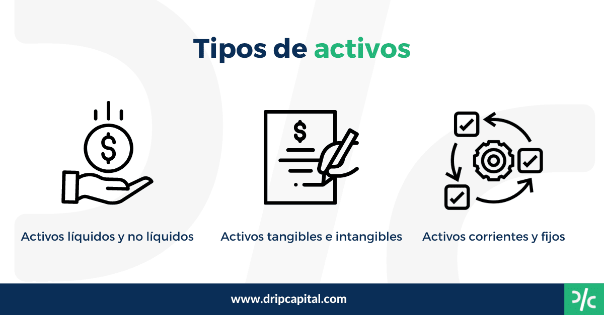

Activos y Pasivos
Los activos son recursos con valor de los cuales se espera obtener un beneficio en el futuro
Existen tres tipos de activos: Circulantes, Fijos y Diferidos.
Cada uno de estos abarca bienes distintos.
Entra al siguiente enlace: para mas y mejor informacion.
Los integrantes son: Diego Laborin, David Sugich y Javier Molina.
Nosotros tres formamos parte de el area Economico-Administrativo.
Profesor: Carlos Armenta.
Grado: 12.
Materia: Programacion
Escuela: Centro Escolar Campogrande.
